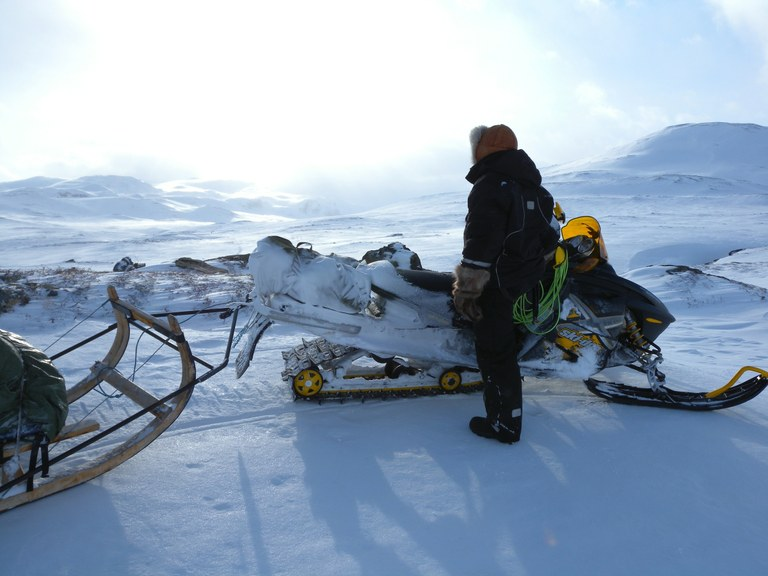

ΥΓΕΙΟΝΟΜΙΚΟΙ ΚΙΝΔΥΝΟΙ
Συμπτώματα Κρυοπαγημάτων - Όταν το σώμα παγώνει δίνει μάλλον προτεραιότητα στην διατήρηση της κεντρικής θερμότητας παρά στο ζέσταμα των άκρων. Επομένως, διακόπτει την λειτουργία των αιμοφόρων αγγείων του δέρματος. Σε άκρως ψυχρές καιρικές συνθήκες, τα τμήματα του ανθρωπίνου σώματος που βρίσκονται στα άκρα της κυκλοφορίας ενδέχεται, στην πραγματικότητα, να παγώσουν και να προκαλέσουν βλάβες στους ίστους. Η κατάσταση αυτή είναι γνωστή και ως κρυοπάγημα. Το κρυοπάγημα μπορεί να εξελίσσεται τόσο αργά, ώστε το άτομο που έχει προσβληθεί να μην το αντιληφθεί παρά μόνο την τελευταία στιγμή. Πρέπει να έχετε στον νου σας για την εμφάνιση μιας τέτοιας επικίνδυνης κατάστασης, διότι όταν καταστεί σοβαρή, μπορεί να οδηγήσει σε γάγγραινα και απώλεια του προσβληθέντος τμήματος. Τα πρώτα συμπτώματα που γίνονται αντιληπτά είναι ένα αίσθημα μυρμηκίασης στο παγωμένο τμήμα, το οποίο μπορεί επίσης να πάθει ακαμψία και να μουδιάσει. Αργότερα, το δέρμα του γίνεται ωχρό και ακολούθως λευκό, πριν παρουσιάσει διάστικτες μελανιές και τελικά γίνει μαύρο, καθώς θα νεκρώνονται οι ιστοί.
Επειδή το εκτεθειμένο δέρμα μπορεί εύκολα να υποστεί κρυοπάγημα, ελέγχετε συχνά τις ακάλυπτες επιφάνειες του σώματος - ιδιαίτερα τη μύτη και τα δάκτυλα των χεριών και των ποδιών. Άλλες περιοχές που πρέπει να ελέγχονται είναι οι αστράγαλοι και καρποί των χεριών. Αν βρίσκεστε με άλλο άτομο, να ελέγχετε ο ένας τον άλλον για τυχόν ύπαρξη προειδοποιητικών σημείων επερχόμενου κρυοπαγήματος. Μόλις διαπιστώσετε ότι κάποιο τμήμα του σώματος έχει υποστεί κρυοπάγημα, πρέπει να το ζεστάνετε σιγά-σιγά με κάποιο φυσικό τρόπο. Η επαφή σάρκα με σάρκα παρέχει μια άριστη μέθοδο βραδείας θέρμανσης. Αν υπάρχει ζεστό νερό, χρησιμοποιήστε το, αλλά βεβαιωθείτε ότι δεν είναι πολύ καυτό. Άτομα που έχουν υποστεί κρυοπαγήματα θα πρέπει να μεταφέρονται σε καταφύγιο, το ταχύτερο δυνατό, και να προστατεύονται από περαιτέρω απώλεια θερμοκρασίας με κουβέρτες ή άλλα πρόσθετα ρούχα. Θα πρέπει να δοθούν στον πασχόντα ζεστά ροφήματα και τροφή, το δυνατό συντομότερο.
Υποθερμία - Υποθερμία έχουμε όταν η θερμοκρασία του σώματος πέφτει κάτω από τους 35C και η θερμότητα του σώματος χάνεται ταχύτερα σε σχέση με την δυνατότητα αναπλήρωσης της. Στο στάδιο αυτό, οι λειτουργίες του σώματος αρχίζουν να επιβραδύνονται και μπορεί να σταματήσουν ολοσχερώς, αν η κατάσταση δε θεραπευτεί. Σημαντικός παράγοντας, που συντελεί στην κατάσταση αυτή είναι η έκθεση σε ψυχρό και επαρκές ντύσιμο, η εξάντληση και η έλλειψη τροφής και υγρών. Είναι σημαντικό να αντιλαμβανόμαστε τα συμπτώματα, ιδίως όταν βρεθούμεσε οποιαδήποτε από τις καταστάσεις που περιγρόφονται παραπάνω.
Τα συμπτώματα της υποθερμίας είναι:
- Το μη ελεγχόμενο ρίγος (τρεμούλιασμα)
- Δέρμα ωχρό, στεγνό και κρύο στην αφη, κάτω του φυσιολογικού ορίου.
- Μυική αδυναμία, λήθαργος και ανάγκη για ύπνο.
- Θάμπωμα της όρασης.
- Παράλογη συμπεριφορά.
- Μεταβολές στην προσωπικότητα - ένα εξωστρεφές άτομο είναι πιθανό να γίνει εσωστρεφές και ένα ήρεμο άτομο να αναπτύξει επιθετική συμπεριφορά.
- Βραδύς, αδύνατος σφυγμός.
- Βαριά αναπνοή
- Τελική απώλεια αισθήσεων.
- Πιθανή καρδιακή ανακοπή.
Επομένως, η υποθερμία θα πρέπει να αντιμετωπίζεται αμέσως με αποκατάσταση της απολεσθείσας θερμοκρασίας του σώματος. Αυτο σημαίνει οτι θύμα πρέπει να μεταφερθεί το συντομότερο σε ένα καταφύγιο. Χρησιμοποιήστε στεγνά ρούχα και σκεπάσματα σε αντικατάσταση των βρεγμένων ρούχων. Αν το θύμα έχει βουτηχτεί τελείως στο νερό, αφαιρέστε όλα τα ρούχα του - διότι τα βρεγμένα ρούχα του μειώνουν ταχύτερα την θερμοκρασία του σώματος παρά όταν είναι γυμνό. Αν έχετε μια αλουμινοκουβέρτα, χρησιμοποιήστε την για ανάκλαση της ακτινοβολούμενης θερμότητας πίσω στο σώμα. Ένα ζεστό φαγητό και ρόφημα θα βοηθήσουν, έφοσον βέβαια το θύμα διατηρεί τις αισθήσεις του. Αν βρίσκεται κοντά κάποιο άλλο άτομο από τους επιζήσαντες θα πρέπει να προσπαθήσει να ζεστάνει το θύμα με το σώμα του. Το θύμα ενδέχεται να χάσει τις αισθήσεις του και να μην έχει κανένα σημείο αναπνοής ή σφιγμού. Αρχίστε αμέσως τεχνητή αναπνοή και πιέσεις του θώρακα. Και σ' αυτή την περίπτωση θα χρειάζεται η εξασφάλιση της ζεστασιάς. Ακόμη και αν η θερμοκρασία του σώματος πέσει στουw 26C, μην συμπεραίνετε αμέσως ότι το άτομο είναι νεκρό. Συνεχίστε τις μεθόδους ανάνηψης μέχρις ότου η θερμοκρασία του σώματος φθάσει στο φυσιολογικό επίπεδο. Αν όμως η θερμοκρασία δεν επέλθει, τότε μπορείτε να υποθέσετε ότι έχει επέλθει ο θάνατος.
 Θάμπωμα/τύφλωση από χιόνι - Όταν διασχίζετε μια χιονισμένη περιοχή κάτω από έντονο φως ήλιου, τα μάτια εκτίθονται στις ανακλώμενες ακτίνες που διαχέονται από τα μόρια του χιονιού, οι οποίες ερεθίζουν το βολβό του ματιού από όλες τις κατευθύνσεις. Η κατάσταση αυτή προκαλεί θάμπωμα και στη συνέχεια μια επώδυνη και υγρή φλεγμωνή των βολβών των ματιών, με ένα αίσθημα καψίματος. Τα πρώτα συμπτώματα είναι μια αίσθηση ερεθισμού του ματιού, που μπορεί να εξελιχθεί σε έντονο πόνο και απώλεια της όρασης. Η τύγλωση από το χιόνι μπορεί να είναι βασανιστική, αλλά δεν είαναι σοβαρή κατάσταση. Η πρόληψη είναι η καλύτερη απάντηση - προστατέψτε τα μάτια με γυαλιά ηλίου ή ειδικά γυαλιά χιονιού. Αν δεν διαθέτετε τίποτα από αυτά, μια μάσκα από χαρτόνι, ύφασμα ή από φλοιό κορμών δέντρων με στενές σχισμές, ώστε να μπορείτε να βλέπετε, θα αρκεί. Χρησιμοποιήστε κάρβουνο επίσης για να μαυρίσετε το τμήμα κάτω από τα μάτια σας και να περιορίσετε έτσι το θάμπωμα.
Θάμπωμα/τύφλωση από χιόνι - Όταν διασχίζετε μια χιονισμένη περιοχή κάτω από έντονο φως ήλιου, τα μάτια εκτίθονται στις ανακλώμενες ακτίνες που διαχέονται από τα μόρια του χιονιού, οι οποίες ερεθίζουν το βολβό του ματιού από όλες τις κατευθύνσεις. Η κατάσταση αυτή προκαλεί θάμπωμα και στη συνέχεια μια επώδυνη και υγρή φλεγμωνή των βολβών των ματιών, με ένα αίσθημα καψίματος. Τα πρώτα συμπτώματα είναι μια αίσθηση ερεθισμού του ματιού, που μπορεί να εξελιχθεί σε έντονο πόνο και απώλεια της όρασης. Η τύγλωση από το χιόνι μπορεί να είναι βασανιστική, αλλά δεν είαναι σοβαρή κατάσταση. Η πρόληψη είναι η καλύτερη απάντηση - προστατέψτε τα μάτια με γυαλιά ηλίου ή ειδικά γυαλιά χιονιού. Αν δεν διαθέτετε τίποτα από αυτά, μια μάσκα από χαρτόνι, ύφασμα ή από φλοιό κορμών δέντρων με στενές σχισμές, ώστε να μπορείτε να βλέπετε, θα αρκεί. Χρησιμοποιήστε κάρβουνο επίσης για να μαυρίσετε το τμήμα κάτω από τα μάτια σας και να περιορίσετε έτσι το θάμπωμα.